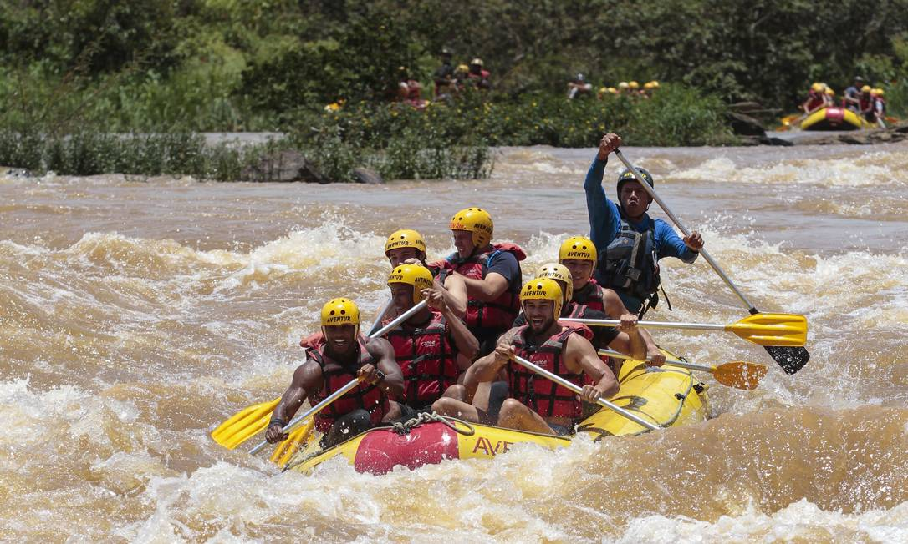

Rio Aventura
O Rio Aventura é uma excelente opção para quem deseja conhecer o rafting e experimentar a emoção de navegar pelas corredeiras. Durante o percurso, os participantes contam com acompanhamento de instrutores experientes e equipamentos de segurança.
O passeio combina aventura, contato com a natureza e momentos de diversão, sendo indicado para pessoas que estão conhecendo o esporte pela primeira vez.